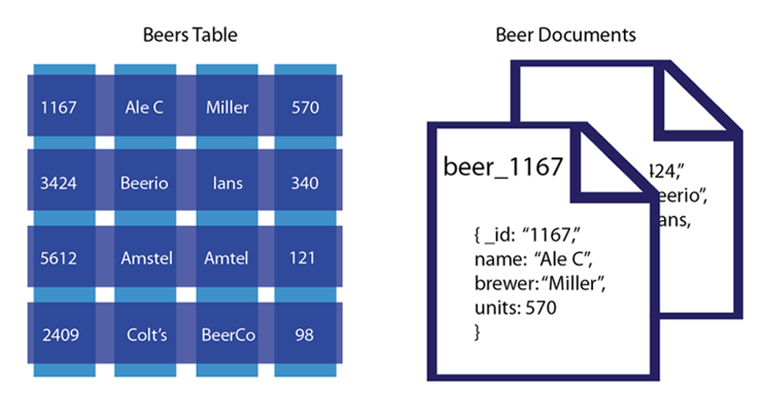

What is NoSQL?

Classical RDBMS Rules
Atomic: All or Nothing
Consistent: Only Valid Data
Isolated: Transactions Don't Affect Each Other
Durable: Data is Written on Submission
CAP Theorem

BASE
Basically Available
Soft state
Eventual consistency
NoSQL Pro v. Con
| Pros |
Cons |
| High Scalability |
No Standardization |
| Distributed Computing |
Limited Query Capabilities |
| Lower Cost |
Eventually Consistent |
| Schema Flexibility |
| No Complicated Relationships |
Column (Family) Database
Apache HBase, Hypertable, Cassandra
Document Based
MongoDB, CouchDB

Graph
AllegroGraph, DEX, Neo4j
Key-Value Stores
Riak, memcached, BigTable
NoSQL Security?
Security is not the Goal